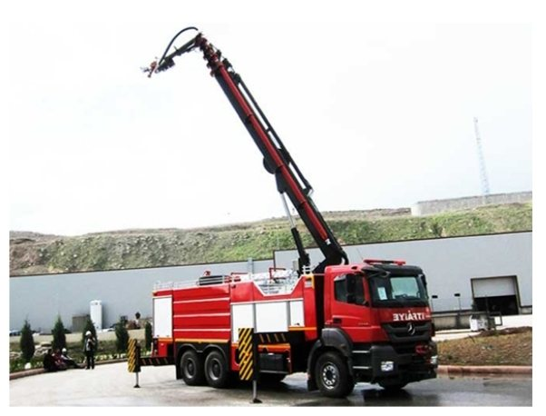
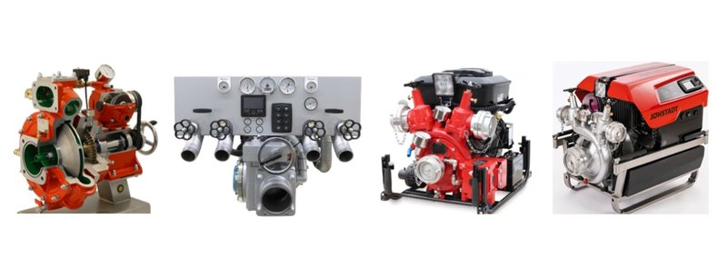

Services and transformations of fire trucks
Get a quoteFirefighting lifting and rescue machines
Fires in residential and administrative buildings above the third floor always pose a serious challenge for firefighters, as they have to perform two very important tasks simultaneously. These two important tasks are extinguishing the fire and rescuing people. In most cases, in large fires, these two activities must be performed in parallel, because it is not possible to start extinguishing the fire after rescuing people or vice versa. Many fire departments do not have lifting fire engines, which puts the lives and health of people and firefighters at serious risk.
Other fire departments have a combined fire engine equipped with a basket for rescuing people and a fire extinguishing monitor mounted on the rescue basket. The truth is that such a combined fire engine (hoist or ladder) cannot perform its two main functions – extinguishing and rescuing at the same time. If a firefighter from the basket is extinguishing with a monitor roof structures or fires in homes and offices above the third floor, he cannot be involved in rescuing people and vice versa – if he is involved in rescuing people, he cannot be involved in extinguishing with a monitor from the basket of the fire engine.

The above factual situation requires conceptual conclusions and corrections to the tactics and techniques for rescuing people and extinguishing fires from the third floor upwards. These conceptual corrections should exclude the unification in one lifting machine of the two main functions – simultaneous extinguishing of the fire and rescuing people. The parallel and effective performance of these two separate activities requires that they be carried out by two separate specialized machines. One machine should be a fire truck equipped with a monitor mounted on a lifting device that should only extinguish fires in roof structures or homes and offices from the third floor upwards. The other machine should be a fire emergency rescue vehicle equipped with a lifting device with a basket for rescuing people, having a full set of resuscitation and other rescue and auxiliary equipment necessary for such situations.
To solve the above problems, BULFIRE Ltd. offers two different solutions:
1.1. Production and delivery of new separate machines – fire trucks with lifting devices with mounted monitors for extinguishing fires up to 10 floors and emergency rescue vehicles equipped with a rescue basket for rescuing people, having a full set of resuscitation and other rescue and support equipment necessary for such situations.
1.2. In case of limited budget of fire departments, we alternatively offer equipping existing fire trucks in service with lifting devices with mounted monitors for extinguishing fires up to 10 floors and transforming existing vehicles into fire emergency rescue vehicles with lifting devices and a basket for rescuing people.


Transformations of fire trucks
BULFIRE Ltd. performs transformations of fire trucks and other trucks by installing additional lifting, extinguishing, or rescue equipment. The transformation of fire trucks or other trucks in operation or those that are not in operation into other types of specialized trucks with new specialized superstructures is an activity with high technical and economic efficiency for the municipality or the fire department, leading to a reduction in delivery times and price by up to 5-10 times compared to the purchase of a new machine with a similar specialized superstructure.
In most municipalities, some trucks are not used. These trucks, instead of being scrapped, can be transformed into other types of machines with new specialized superstructures – fire and emergency rescue trucks, cranes, work lifting platforms, municipal street washing machines, and others. Our specialization in the production, transformation, and homologation of converted trucks allows municipalities to realize their intentions to acquire new specialized equipment with minimal funds.


A similar transformation is also possible for tractors if the municipality owns them. Additional information about the transformation of tractors for performing various other activities can be found at this link: https://bulfire.ecoes.eu/fire-tractor/.
Service of fire and other special superstructures
BULFIRE Ltd. performs services on the specialized superstructure of fire trucks and other special vehicles regardless of the make, model, and year of manufacture.
Service of fire and other special superstructures includes the following activities:
- Partial or major repair of the fire protection superstructure, including replacement of main components, if necessary.
- Supply of complete units and spare parts for the fire truck’s superstructure and portable pumps for repairs in fire departments.
- Installation of fire trucks in operation on lifting equipment with a remote-controlled monitor for extinguishing roof structures and fires in buildings up to 10 floors.
- Installation of fire trucks in operation on lifting equipment with a rescue basket for rescuing people up to the 10th floor of residential or administrative buildings.
- Transformation of various types of trucks that are not used in fire, emergency, and rescue, or other special vehicles. In the transformation, all issues related to the installation of PTO, pump transmission, and others are resolved by us.
- Other service activities related to the repair or transformation of trucks and tractors, in other types of special machines (municipal, lifting, waste collection, for road maintenance in winter conditions, dump trucks, etc.).



The transformation of an existing chassis with a new specialized superstructure into another type of specialized truck is an activity with high technical and economic efficiency, resulting in a reduction in the purchase price of up to 5-10 times compared to purchasing a new machine with a similar specialized superstructure. The high operability of transformed trucks with new specialized superstructures and the low cost of their acquisition makes them very suitable for municipalities, fire departments, and volunteer fire services with limited budgets because these institutions will practically achieve the same operational effect as a new, similar machine, but at a much lower cost.
For all questions related to the supply of complete units and spare parts, service, or transformation of special trucks and tractors, please contact us.